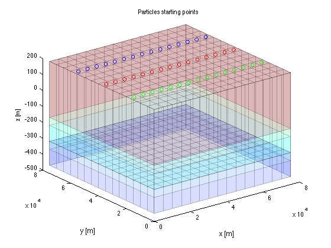

Generic steady state MODFLOW model with particle tracking using MODPATH6
Contents
- Explanation
- basename must be set global to inform particleGroupObj about it
- ======= PARTICLE TRACKING =========
- Generate particles to start tracking
- Specify the zone array defining cells to place groups of particles
- Specify the arguments pertaining to these starting zones
- Generate particle group, one particle group object per zone
- Get the particles
- Show particles in 3D
- You can turn the graphic by hand to better view the particles
- Conclusion
- TO 130614
Explanation
This model is the same as the steady generic model. Because that model was explained extensively in its mf_adapt, we only copy the steps without comments. At the a steup is made for particle tracking using MODPATH6.
basename must be set global to inform particleGroupObj about it
global basename close all; clear variable; basename = 'generic_steady_modpath'; save('name','basename'); xGr = 0:5000:75000; yGr = 75000:-5000:0; mf_lay2mdl(basename,xGr,yGr); gr = gridObj(gr.xGr,gr.yGr,gr.zGr+200,gr.LAYCBD); well = wellObj(basename,'wells',gr,HK,{'PER','Q'}); IBOUND(:,1,[1 2]) = -1; line = [ 7500 37500 0 ; 47500 37500 100]; cDrn = 100; % [m/d] DRN = gr.bcnLine(basename,'DRN',line,cDrn);
mf_lay2mdl: The following arrays and variables are saved to the Matlab workspace:
name size class bytes
HK 15 15 3 double 5400
IBOUND 15 15 3 double 5400
PEFF 15 15 3 double 5400
PORCB 15 15 2 double 3600
STRTHD 15 15 3 double 5400
VK 15 15 3 double 5400
VKCB 15 15 2 double 3600
gr 1 1 gridObj 506
======= PARTICLE TRACKING =========
To make it run, the program MODPATH must be ON in worksheet NAM together with MODFLOW2000 or MODFLOW2005. Further, check the settings in worksheet MPATH. There are many settings to deal with the many options that come with MODPATH. You may want to verify the manual of MODPATH6 as well. Forget about older versions of MODPATH, they are obsolete.
Generate particles to start tracking
in our simple case we will just generate particles at the water table, that is using particles in the upper layer with iface=6 (particles released at the top of the layer). These particles will be released at some arbitrary rows 4, 8 and 12).
Specify the zone array defining cells to place groups of particles
zoneArray = gr.const(0);
specify zone locations in zone array
zoneArray( 4,:,1)=1; % set zone 1 row 4 layer 1 zoneArray( 8,:,1)=2; % set zone 2 row 8 layer 1 zoneArray(12,:,1)=3; % set zone 3 row 12 layer 1
Specify the arguments pertaining to these starting zones
This is done in a zoneVals cell array in which each line specifies the properties for one zone:
zoneVals = {1,'name',basename,'placement',1,'IFace',6,'LineSpec','bo';
2,'name',basename,'placement',1,'IFace',6,'LineSpec','ro';
3,'name',basename,'placement',1,'IFace',6,'LineSpec','go'};
Generate particle group, one particle group object per zone
Generate the mpath_partileGroupObj from which MODPATH can generate the starting locations of the particles. See "help mpath_particleGroupObj" for options.
pGrp = mpath_particleGroupObj(gr,zoneArray,zoneVals); % particleGroups
Get the particles
This is not necessary. We only do this to show them before we launch MODPATH.
pGrp = pGrp.getParticles(gr);
Show particles in 3D
figure; hold on; view(3); xlabel('x [m]'); ylabel('y [m]'); zlabel('z [m]'); gr.plotMesh('faceAlpha',0.15); % thin grey lines pGrp.plot(); title('Particles starting points');
You can turn the graphic by hand to better view the particles
save underneath zoneVals
Conclusion
Particle tracking can be added to a model in just a few steps.